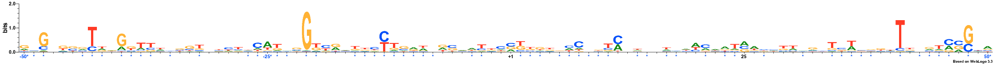
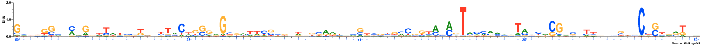
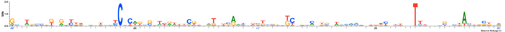
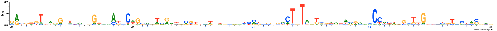
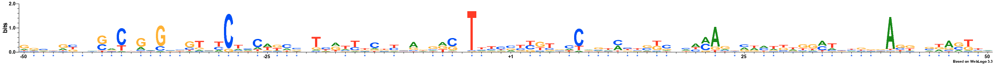
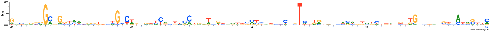
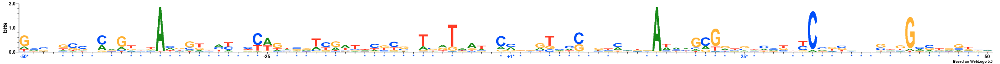
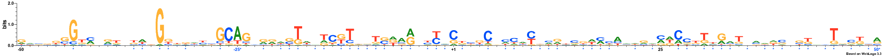
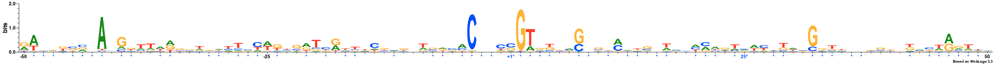
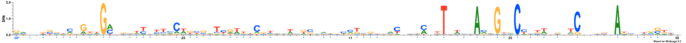

MODEL
Lambda: 1.0
Dataset structure: 800 sequences with 100 features
Number of architectures in the best model: 10
Likelihood of best model: -94684.331252
Architecture 1: 88 sequences with 60 important features
Sequence logo for the important positions in architecture 1

Architecture 2: 51 sequences with 65 important features
Sequence logo for the important positions in architecture 2

Architecture 3: 120 sequences with 50 important features
Sequence logo for the important positions in architecture 3

Architecture 4: 40 sequences with 48 important features
Sequence logo for the important positions in architecture 4

Architecture 5: 47 sequences with 55 important features
Sequence logo for the important positions in architecture 5

Architecture 6: 76 sequences with 55 important features
Sequence logo for the important positions in architecture 6

Architecture 7: 53 sequences with 64 important features
Sequence logo for the important positions in architecture 7

Architecture 8: 25 sequences with 56 important features
Sequence logo for the important positions in architecture 8

Architecture 9: 93 sequences with 59 important features
Sequence logo for the important positions in architecture 9

Architecture 10: 207 sequences with 47 important features
Sequence logo for the important positions in architecture 10

NOTE: All important positions in the logos are followed by an asterisk symbol and are coloured blue